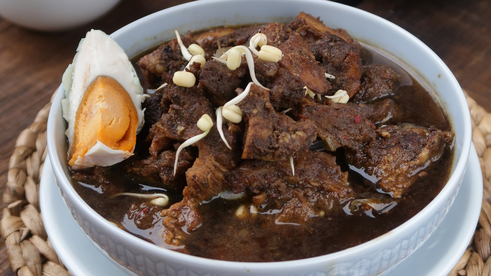

Rawon (Indonesia Black Beef Soup)

Description
Rawon is a traditional Indonesian beef soup originating from East Java. It
is known for its dark broth made from keluak nuts, which
give the soup its distinctive color and rich earthy flavor. Rawon is
usually served with rice, bean sprouts, salted eggs, and sambal.
Ingredients
For the soup:
- 500 g beef (cut into cubes)
- 2 liters water
- 3 keluak nuts (soaked and mashed)
- 2 stalks lemongrass, bruised
- 3 kaffir lime leaves
- 2 bay leaves
- 2 tablespoons cooking oil
- Salt to taste
- Sugar to taste
Spice paste:
- 5 cloves garlic
- 6 shallots
- 3 candlenuts
- 1 teaspoon coriander
- 1 teaspoon turmeric
- 1/2 teaspoon black pepper
Additional toppings:
- Bean sprouts
- Boiled egg
- Fried shallots
- Green onions
- Sambal (optional)
Steps
-
Boild the beef
In a large pot, boil the beef with water until the meat becomes tender.
Remove any foam that forms on the surface.
-
Prepare the spice paste
Blend garlic, shallots, and candlenuts, coriander, turmeric, and black
pepper into a smooth paste.
-
Cook the spices
Heat cooking oil in a pan and saute the spice paste until fragrant.
-
Add the keluak
Add the mashed keluak into the sauteed spices and mix well.
-
Combine with the soup
Add the spice mixture into the beef broth. Then add lemongrass, bay
leaves, and kaffir lime leaves.
-
Season the soup
Add salt and suagr to taste. Let the soup simmer for 20-30 minutes so
the flavors blend well.
-
Serve
Serve the rawon hot with rice, bean sprouts, boiled egg, fried shallots,
and sambal.
Back to main